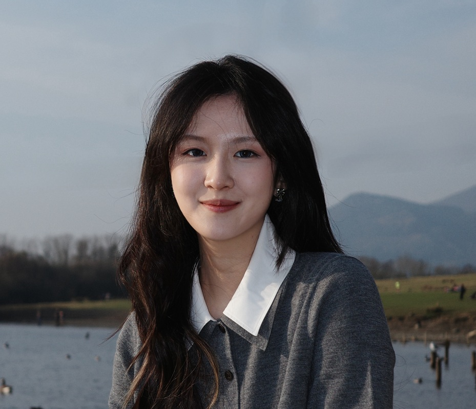
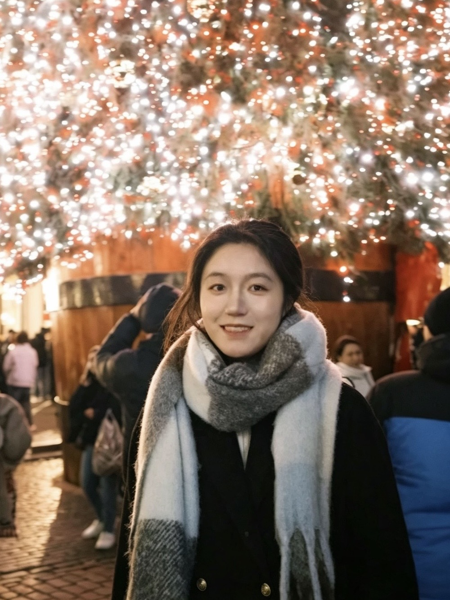

People
Group members

Martin R. Vasilev
Lecturer, University College London
Martin studies oculomotor control during reading and related tasks. His current research focuses on auditory distraction, saccade targeting during reading and computational modelling, alongside broader interests in evidence synthesis, statistical inference and open science.
He completed a BA in Psychology at the University of Sofia, an MSc in Linguistics at the University of Potsdam and a PhD at Bournemouth University. After postdoctoral work with Tim Slattery, he joined Bournemouth University as a lecturer before moving to UCL.
Hanyue Lei
Hanyue is interested in how adult ADHD influences eye-movement patterns and reading comprehension accuracy, comparing these with neurotypical controls. She aims to bridge cognitive psychology and real-world applications in educational and clinical settings.
Hanyue is an MSc graduate in Social Cognition from University College London (UCL), and holds a BSc in Psychology from the University of Manchester.

Hainuo Wang
Hainuo (Nora) Wang is an undergraduate student in Psychology at UCL, currently working with Martin Vasilev on an eye-tracking project investigating the mechanism underlying corrective saccades during reading. Her broader research interests lie in cognitive neurosciences and cognitive psychology, particularly visual perception, attention and language cognition.
Nancy Yang
Nancy is a Third Year BSc Psychology student at UCL with interests in eye movements, visual cognition, reading, and attention. As a research assistant in the group, she has supported eye-tracking studies using the EyeLink 1000 Plus and developed experience in participant testing, experimental research, R, and Bayesian mixed-effects modelling. Her broader research interests focus on using quantitative methods to understand how people process information and make decisions.

Yinan Xia
Yinan is an MSc student in Language Sciences at UCL. Her research examines individual differences in language learning and processing, with a particular focus on psycholinguistic and eye-tracking approaches to reading and attention. Her research interests focus on eye movements during reading; particularly how auditory distraction affects reading processes. She is also interested in psychological and neurocognitive individual differences in AI-assisted language learning.
Abdur Miah
Abdur loves understanding how people think and behave, and hopes to research how we build resilience. He's also a bit of a nerd. Besides psychology, his interests include judo, computer programming, and reading.